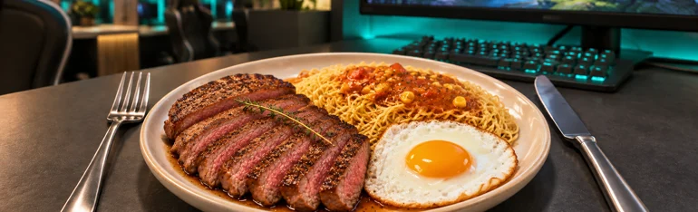
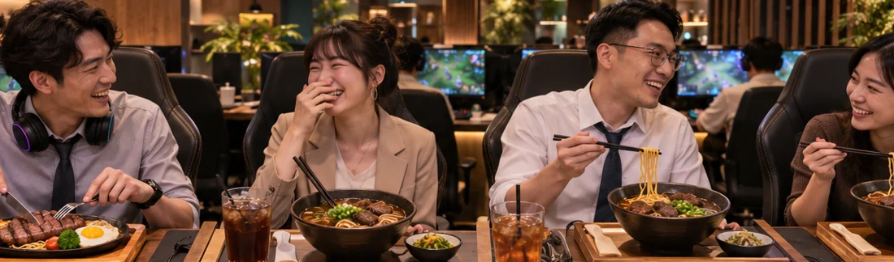
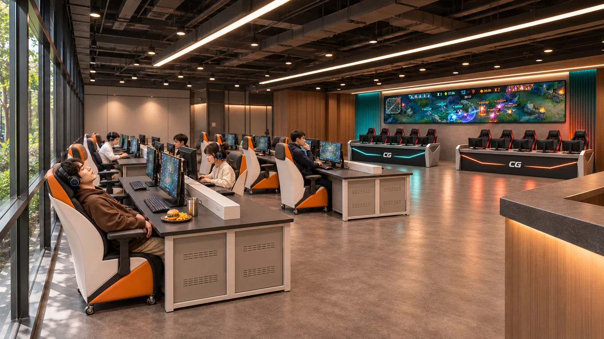
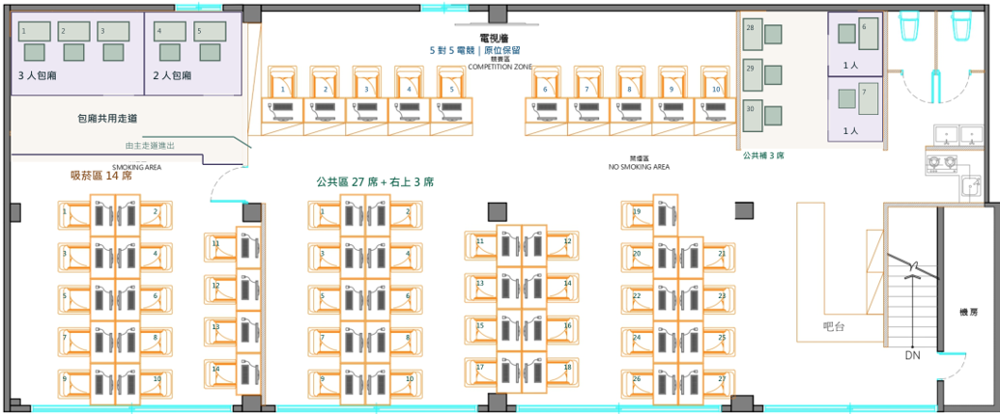
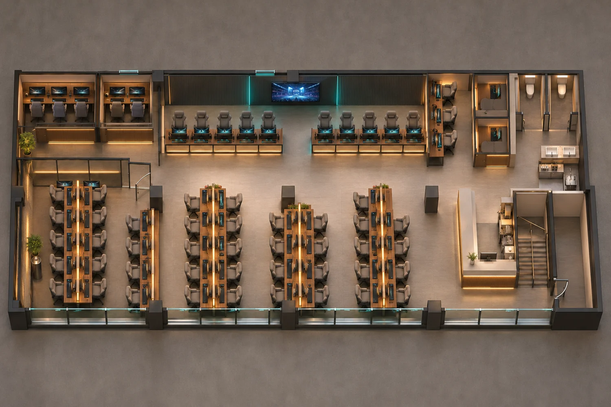
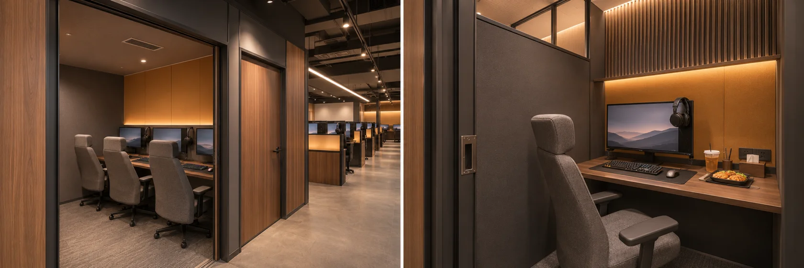
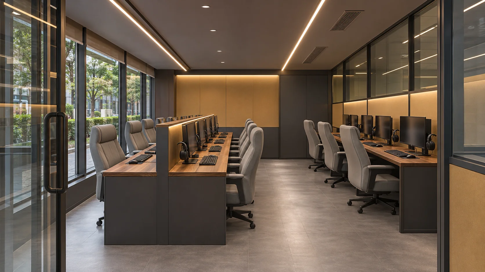
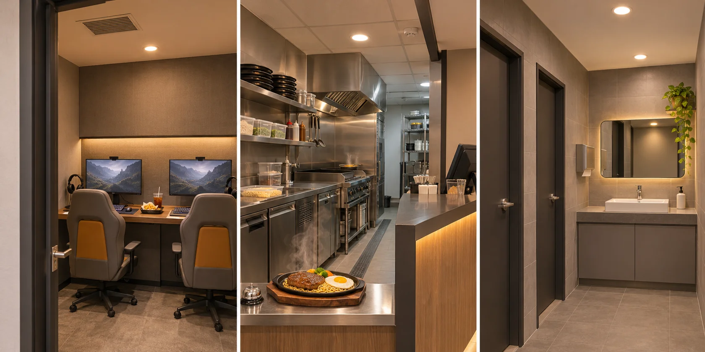

客人為什麼會來 CG？

圖片為 AI 生成情境示意。
想躺著追劇，或和朋友坐一起？
舒適區的高背沙發椅可以後躺，頭枕能托住後腦。想安靜一點可選單人包廂，跟朋友來有雙人、三人包廂和相鄰座位。



全店平面圖與包廂
規劃 61 席，含公共 30 席、電競 10 席、包廂 7 席與左側獨立區 14 席。包廂為一間三人、一間雙人、兩間單人。財務暫按 60 席。櫃台、廚房與廁所維持原位，座位尺寸待現場複量。






1,500 萬元首輪募資目標
1 萬元每股出資
10 萬元首輪每人認購上限
每天要賣幾份餐，生意才做得起來？
以每日 432 份付費餐為營運目標。試營運先看尖峰能否每小時出 50 份，再看平峰餐券核銷和回訪能帶來多少實收。
318每日餐飲打平門檻
432每日付費用餐目標
- 午晚餐 · 6 小時300 人次
- 平峰回訪 · 8 小時96 人次
- 離峰宵夜 · 10 小時36 人次
怎麼算？坐久一點會差多少？
財務按 60 席、每天 24 小時、餐飲占座 30%、每客 1 小時試算。尖峰每小時需要接待 50 位。
尖峰平均多坐 15 分鐘，同樣 50 席下，全日約剩 372 人次。按客單 180 元、餐點成本 90 元及每月成本 85.64 萬元，餐飲月稅前約從 31 萬元降到 14.80 萬元。
CG 電競擂台｜五人組隊，來店挑戰
- 五人組隊
- 到店打 5 對 5
- 守擂或挑戰
- 月底四強決賽
- 每人 200 元賽事套餐
- 報名登記免費。出賽須購買套餐，含 3 小時比賽用機及指定飲品一杯。
- 每月店家贊助 1 萬元起
- 每依規完賽一場加碼 500 元，滿 30 場達現金獎金上限 2.5 萬元。
- 擂主與挑戰隊都有理由回來
- 勝隊登擂或衛冕，勝方得 3 分、敗方得 1 分。離峰可安排對戰，月底由四強再交手。
CG 電競擂台｜活動規則、套餐與獎金
報名與賽事套餐
每隊 5 位正選。報名登記免費，出賽選手須購買每人 200 元的賽事套餐，包含 3 小時比賽用機及指定飲品 1 杯，由 CG 開立發票。禁止選手或觀眾私下對賭。
挑戰、積分與決賽
首週抽籤決定首任擂主與挑戰隊伍。勝隊登擂或衛冕並得 3 分，敗隊得 1 分。同一隊長且有至少 3 名相同隊員，視為同一隊。每隊每天最多挑戰 1 場，挑戰失利後至少間隔 24 小時才能再預約。
每月底由四強隊伍進行決賽，決出冠軍、亞軍及季軍。比賽項目、日期、單場或三戰兩勝賽制、四強排序及同分判定，會在開放報名前公告。
店家贊助與完賽加碼
現金基礎獎金 1 萬元，由 CG 編列行銷預算支應。當月每完成 1 場正式擂台賽，雙方 10 位選手均依規完賽，CG 加碼 500 元。滿 30 場達現金總獎金上限 2.5 萬元，後續完賽仍可累積積分。
- 冠軍隊獲現金總獎金的 70%，正選每人另獲店內儲值金 500 元。
- 亞軍隊獲 20%，正選每人另獲店內儲值金 300 元。
- 季軍隊獲 10%，正選每人另獲店內儲值金 200 元。
領獎與異動
決賽後由隊長代表聯繫領獎，獎金與獎品依適用規定辦理扣繳及申報。未成賽、延期或取消時的套餐與獎金處理方式，會在開放報名前一併公告。
賽事試算｜每月 24 場可以留下多少？
假設 24 場均有 10 人購買套餐且依規完賽，共 240 個參賽人次，包含可能回訪的選手。
- 套餐營收 48,000 元，按每場 10 人、每人 200 元計算。
- 店家現金獎金 22,000 元，含基礎 1 萬元及 24 場各 500 元加碼。
- 扣現金獎金後餘 26,000 元，還要支付飲品、主持、裁判、轉播、水電及決賽成本，並估計儲值金核銷與機位占用成本。
若排 8 個比賽日、每天 3 場，同一組機位每天需預留 9 小時，另留換場時間。賽事採獨立試算。
看活動與記錄方式
規劃讓指定遊戲玩家到店消費、驗證本人帳號後獲贈排餐。周邊彩券行憑證可搭配餐券活動。贈餐成本另列，付費餐數與付費開台時數分開記錄。每日 432 用餐人次與平台轉換率均為試算假設。
財務試算
投資 1 萬元，首年投報率多少？
選用餐人次和平台情境，查看每股投報率和各季試算。
每月來店 17,280 人次 · 僅計餐飲
- 首年投報率（稅前）
- 24.80%
- 每股
- 三年累計投報率（稅前）
- 74.40%
- 每股 7,440.00 元
每季結算分潤一次
首年各季稅前利潤，按 1,500 股折算。
- 第 1 季
- 620.00 元／股
- 第 2 季
- 620.00 元／股
- 第 3 季
- 620.00 元／股
- 第 4 季
- 620.00 元／股
實領按各季可分配盈餘結算，先扣稅費、補足累虧並保留必要資金。
- 餐飲首年營業額
- 2,799.36 萬元
- 餐飲首年稅前利潤
- 372.00 萬元
- 平台首年合作利潤試算
- 0.00 萬元
- 公司首年合計稅前試算
- 372.00 萬元
- 餐飲每股
- 平台每股
看第 1 至第 3 年投報率
各年投報率＝當年稅前每股利潤 ÷ 每股出資 1 萬元。
比較 9 種客流與收益情境
三種每日用餐人次各比較 1%、3%、5%。各欄列出首次入金、餐飲與平台利潤、公司合計及每股試算。來店人次包含回訪，每位首次入金客戶依合作方對帳只計一次。
成本與平台假設
餐飲以每月 30 天、客單 180 元、每餐直接成本 90 元估算。每月共用成本 85.64 萬元，含租金 15 萬元、7 人底薪 42.30 萬元、其他營運 10.84 萬元、折舊 17.50 萬元。加班、替班與雇主負擔待核對。
每月來店人次含回訪，以情境比例估首次入金人數，開店後按合作方對帳逐人確認。每月活躍入金客等於本月新增加上上月活躍客的 80%。人均月入金 2,000 元，合作利潤按入金的 20% 試算，實際依合作結算，可能虧損。駐點幣商提供即時換幣服務，收益未納入試算。
未用券開台營收
每日 144 人次、每月 30 天，假設全數未用券且每人開台 2 小時。台費月營收 34.56 萬元，餐飲低消月營收 21.60 萬元，合計 56.16 萬元。此情境未扣成本，獨立列於分紅試算之外。
活動成本示例。若發出 300 張 100 元餐券、核銷率 60%，折抵合計 1.80 萬元。
投資與股東權益
出資上限、用途和權益一次看
1,500 萬元用在哪裡
- 主機、螢幕與桌椅
- 549.75 萬元
- 裝潢與開辦
- 500 萬元
- 首月餐飲週轉
- 10 萬元
- 待分配週轉與結算準備
- 440.25 萬元
空調、電力、網路、廚房、周邊設備、押金與開辦費包含在 500 萬元內。61 席的新增設備與隔間差額依複量及工程報價確認。
每人最多 10 股
首輪每股 1 萬元，每人出資最多 10 萬元，希望大家量力參與。出資可能虧損。
加盟推廣權由股東專享
品牌正式開放加盟後，原始股東與貢獻股東均可推廣。推薦並促成加盟的股東，可取得該案加盟金的 50%。
有興趣參與？
聯絡分享網站的項目團隊，約時間看場地、核對報價與招募條件。季度可分配盈餘按有效持股比例全數分配。